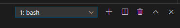
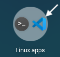
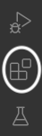

Installing Visual Studio Code¶
Note
If you are a student using a school-issued device, then the software you need is probably already on your machine. Check with your teacher before installing anything!
To start coding on your computer, you need the right tools! Programmers use integrated development environments (IDE) to write and run their code.
Visual Studio Code is a code editor created by Microsoft. We will use it for the later part of the course.
VS Code is very customizable. Once you have everything set up, you can take additional steps to personalize your workspace, such as changing the color theme.
Follow the instructions below to install VS Code on your device.
Windows Users¶
Visit the VS Code website and download the Windows installer. (If the Download for Windows message is not displayed on the large button, select the Stable Windows package using the dropdown arrow).
After the installer fully downloads, run it. On the Select Additional Tasks screen, be sure to select both Create a desktop icon and Add to PATH.
The Select Additional Tasks panel.¶
Once the installation finishes, you need to open the application and perform a few more steps.
Configure VS Code to Use Git Bash¶
You need to tell VS Code to use Git Bash instead of other Windows terminal programs like PowerShell:
Open VS Code.
Open the Terminal menu from the top of the app and select New Terminal.
A new pane opens at the bottom of the application window. This is a terminal window. From the small dropdown found in this pane, choose Select Default Profile.

Find the dropdown menu in the toolbar of the terminal panel.¶
This will open a tool called the Command Palette at the top-center of the application window. Type Git Bash into the Command Palette and hit Enter.
Close VS Code and reopen it. Open a Terminal panel again from the menu. Verify that you see
bashin the dropdown menu in the terminal pane. Now every time you open the terminal, it will default to Git Bash!The terminal dropdown bar displays
bash.¶To finish setting up VS Code, complete the steps in the Adding Extensions section below.
{kind=link}
{kind=link}
Mac Users¶
Visit the VS Code website and download the Mac installer. (If the Download for Mac message is not displayed on the large button, select the Stable macOS package using the dropdown arrow).
Double-click the downloaded file and follow the installer instructions (the default selections are all fine). If there is an option to set the PATH environment variable, select it.
Find VS Code in the Applications folder and open the program. Once VS Code is running, right-click on its icon in the dock and select Options > Keep in Dock. You will be using VS Code quite a bit, and adding it to the dock keeps it handy.
Open the Terminal menu from the top of the app and select New Terminal.
Open the terminal panel.¶
Verify that you see
bashin the dropdown menu in the terminal pane. Ifbashdoes not appear, follow steps 3-5 in the Configure VS Code section above.The terminal dropdown bar displays
bash.¶To finish setting up VS Code, complete the steps in the Adding Extensions section below.
Chromebook Users¶
Warning
If you use a virtual desktop for your programming course, do NOT install VS Code on your device. Use the login information your teacher gave you to access the application.
These instructions assume that you have already activated the Linux terminal on your device.
Visit the VS Code download page.
Click on the
.deboption under the Linux penguin to download the installer.IMPORTANT: Locate the installation package in the Downloads folder. Drag it into the Linux files folder.
Open the Linux files folder. Double-click on the installation package to run it. Confirm the action, then wait. Accept all of the default options.
Once done, return to the Chromebook desktop. Expand the applications dock. Find Visual Studio Code inside the Linux apps subfolder. Click on the icon to launch the program.
Once you are in the program, open the Terminal menu from the top of the app and select New Terminal.
Open the terminal panel.¶
Verify that you see
bashin the dropdown menu in the terminal pane. Ifbashdoes not appear, follow steps 3-5 in the Configure VS Code section above.The terminal dropdown bar displays
bash.¶To finish setting up VS Code, complete the steps in the Adding Extensions section below.
{kind=link}
{kind=link}
{kind=link}
Adding Extensions¶
Now that Visual Studio Code is up and running, you need to install some extensions. These are small programs that support your work by highlighting keywords, flagging syntax errors, providing suggestions, etc. You used these features in the Replit and Trinket online editors. Extensions let you include the same ones in your VS Code workspace.
Open VS Code and select the Extensions icon on the left side of the workspace.
Extensions add helpful tools to VS Code!¶
In the search bar, enter
Python. Select the Python extension fromMicrosoft. Click the Install button.Back in the search bar, enter
html css support. Select and install the option fromecmel.
{kind=link}
{kind=link}
Optional Extensions¶
Besides writing and running code, IDEs also provide support for coders! This includes things like previewing a web page inside the workspace or providing suggestions for how to complete code statements.
While not necessary, the following extensions help you work:
Visual Studio IntelliCode by
Microsoft.Close HTML/XML tag by
Compulim.
{kind=link}
{kind=link}
There are LOTS of other extensions available. Feel free to explore the options, or check Google to find recommendations.